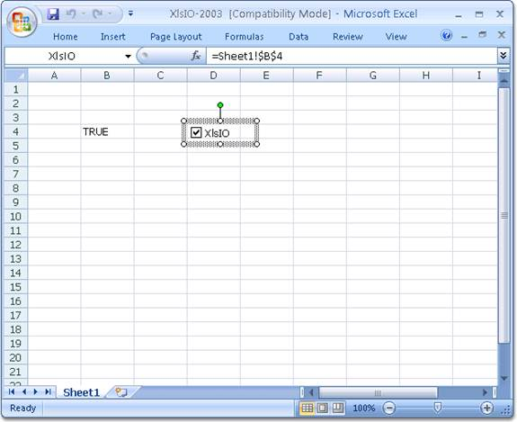

Essential XlsIO supports reading and writing of check boxes. This can be done by using the ICheckBoxShape interface, which is used to add a check box inside a worksheet.
|
[C#]
//Create a check box with cell link. ICheckBoxShape chkBoxXlsIO = sheet.CheckBoxes.AddCheckBox(4, 4, 20, 75); chkBoxXlsIO.Text = "XlsIO"; chkBoxXlsIO.CheckState = ExcelCheckState.Checked; chkBoxXlsIO.LinkedCell = sheet["B4"];
//Read a check box. ICheckBoxShape chkBoxXlsIO = sheet.CheckBoxes[0]; chkBoxXlsIO.Name = "chkBoxXlsIO"; |
|
[VB.NET]
'Create a check box. Dim chkBoxXlsIO As ICheckBoxShape = sheet.CheckBoxes.AddCheckBox(5, 5, 20, 75) chkBoxXlsIO.Text = "XlsIO" chkBoxXlsIO.CheckState = ExcelCheckState.Checked chkBoxXlsIO.LinkedCell = sheet ("B4")
'Read a check box. Dim chkBoxXlsIO As ICheckBoxShape = sheet.CheckBoxes(0) chkBoxXlsIO.Name = "chkBoxXlsIO" |

Figure 97: Check box with Linked Cell created using XlsIO